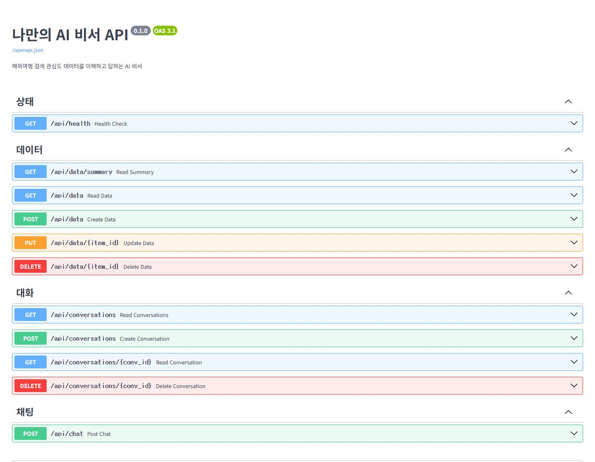
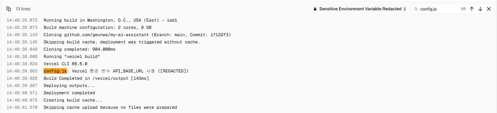
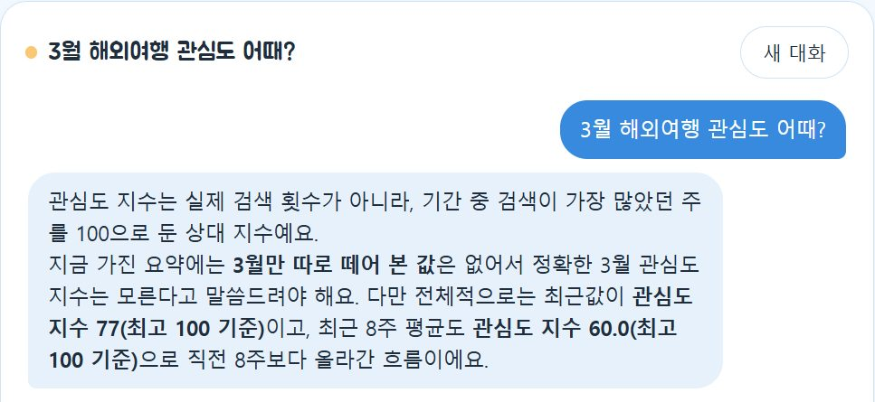

떠날까
해외여행 검색 관심도 AI 비서
5년 치 "해외여행" 검색 데이터를 알고
숫자로 답하는 AI 비서
서버가 쉬고 있으면 첫 접속에 50초 정도 걸릴 수 있습니다.
알고 답하는 비서
과제 한눈에 보기
내 데이터를 아는 AI 비서 만들기!
일반 ChatGPT는 내 데이터를 모릅니다.
내 데이터를 이해하고 맞춤형으로 답하는 AI 웹 서비스를 만드는 과제입니다.
완성해야 하는 결과물 4
AI 채팅
- 자연어로 질문
- 저장된 데이터 요약을
반영한 답변 - 기다리는 동안 로딩 표시
데이터 관리
- date · value · memo 형식
- 추가 · 조회 · 수정 · 삭제
(CRUD) - 목록에 바로 반영
대화 기록
- 대화 자동 저장
- 지난 대화 목록 조회
- 골라서 다시 불러오기
배포와 문서화
- 화면과 서버를 인터넷에 배포
- Swagger로 API 문서 확인
- README로 실행 방법 안내
작업 흐름
요구사항과 제출 항목
스크린샷 3장은 README에 넣기
필수 요구사항 6개 분야 · 세부25
- 기술4
- 백엔드 FastAPI · 화면 HTML/CSS/JS (프레임워크 금지)
DB Firebase Firestore · AI OpenAI GPT API - 배포2
- 백엔드는 Render, 프론트엔드는 Vercel (각 1)
- 데이터2
- 관심 있는 시계열 데이터 100개 이상
요약: 기간 · 개수 · 평균/최대/최소 · 최근 추세 - API10
- 데이터 5개 (CRUD 4 + 요약 1) · 대화 4개 · 채팅 1개
채팅은 요약을 시스템 프롬프트에 넣고 대화를 자동 저장 - 화면4
- 채팅 + 로딩 · 데이터 관리 · 대화 기록 · 데이터 요약
- 보안3
- API 키는 환경 변수로만 관리 (코드에 노출 금지)
입력 검증 · 예외 처리 · 토큰 제한
제출 항목3
- GitHub 저장소를 코디세이 플랫폼에 연결
- README.md
서비스 소개 · 기술 스택 · 배포 URL 3개(화면, API, Swagger)
로컬 실행 방법 · 환경 변수 목록 - 스크린샷 3장
① 요약이 보이는 채팅 (질문 + 답변)
② 데이터 관리 (CRUD 1개 동작)
③ 대화 기록 (불러오기 동작)
보너스 (선택)2
- Function Calling + MCP 또는 GPT Actions 연동
- 지표 추가 · 그래프 · CSV/JSON 내보내기 · 다크 모드
같은 질문, 다른 답
→ 질문할 때 요약을 같이 보내서!
떠날까는 질문할 때마다 최신 데이터 요약을 함께 보냅니다.
그래서 "내 데이터"를 근거로 답합니다.
일반 챗봇
보통 여름 휴가철과 연말에 관심이 높아집니다.
- 내 데이터가 없어서 일반론으로만 답함
- 설명을 위해 만든 예시 문장
떠날까
77점(100점 만점)이에요.
최근 8주 평균 60.0점이 그전 8주 35.2점보다
70.2% 올라서 뚜렷한 상승 흐름이에요.
- 저장된 데이터의 실제 숫자로 답함
- 배포 화면에서 받은 실제 답변을 줄여 옮김
5년 치 "해외여행" 검색 관심도
(2026년 10월 3주)
나머지는 그 주와 비교한 점수!
주간 관심도 지수 (261주)
- 5년 동안 대체로 20~50점 사이에서 움직임
- 2026년 10월에 급등해 10월 3주(10.18~10.24)가 최고 100점
- 출처
- Google Trends · 대한민국 · 웹 검색
- 검색어
- 해외여행
- 기간
- 2021년 11월 1주 ~ 2026년 11월 1주
2021.11.7 ~ 2026.11.7 · 한 주 = 일요일~토요일 - 단위
- 점 = 0~100 상대 지수
가장 많이 검색된 주가 100점
검색 횟수나 %가 아님
추세: 최근 8주 평균(60.0점)과 직전 8주 평균(35.2점)을 비교
변화율이 ±5% 안이면 "유지"
화면 · 서버 · DB · AI의 연결
→ 화면이 렌더(Render) 서버에 묻고
→ 서버가 DB·AI에 다녀와서 답해요
화면은 Vercel, 서버는 Render에 따로 배포했습니다.
DB와 AI에는 서버만 접근하고, 키는 서버 환경 변수에만 있습니다.
사용자
질문 입력
데이터 관리
대화 기록 보기
프론트엔드
HTML · CSS · JavaScript
tteonalkka.vercel.app
fetch로 API 호출
백엔드 API
허용한 주소만 응답 (CORS)
입력 검증 · 요약 계산
API 문서 /docs
Firestore
data 261건 · conversations
OpenAI GPT
요약을 근거로 답변
Render 환경 변수 (서버)
ALLOWED_ORIGINS FIREBASE_SERVICE_ACCOUNT_JSONOPENAI_API_KEY OPENAI_MODEL OPENAI_MAX_TOKENS
Vercel 환경 변수 (화면)
API_BASE_URL 1개
배포할 때 build.sh가 이 값으로 config.js를 만듦
컨텍스트 주입: 요약을 프롬프트에 넣기
→ 답 속 숫자는 전부 요약에서 와요!
POST /api/chat질문과 대화 ID
get_summary()+ 최근 대화 10개
오류는 상황별로 안내
첫 질문 30자가 제목
# 실제 시스템 프롬프트 (줄임) 너는 해외여행 검색 관심도 데이터를 쉽게 설명해 주는 AI 비서 '떠날까'다. [데이터 설명] - 출처: Google Trends, 검색어 '해외여행', 대한민국, 웹 검색 - 값은 주간 검색 관심도 지수(0~100점)다. [답변 규칙] - 지수 값에는 '77점(100점 만점)'처럼 '점'을 붙인다. - 주는 '2026년 11월 1주(11.1~11.7)' 형식으로 말한다. - 요약에 없는 값은 지어내지 말고 모른다고 말한다. [데이터 요약] - 기간: 2021-11-07 ~ 2026-11-01 (주 시작일 기준) · 261주 - 최대: 100점, 2026년 10월 3주(10.18~10.24) - 최근값: 77점, 2026년 11월 1주(11.1~11.7) - 최근 추세: 상승 (최근 8주 평균 60.0, 직전 8주 평균 35.2, 변화율 +70.2%)
이렇게 만든 이유
- GPT는 내 데이터를 학습하지 않았음
→ 질문할 때마다 최신 요약을 같이 보냄 - 원본 261건 대신 요약만 보냄
→ 토큰과 비용 절약 - 데이터를 고치면 다음 질문부터 바로 반영
- 요약 API를 HTTP로 다시 부르지 않음
→ 같은 함수를 직접 호출, 결과는 같음
역할별로 나눈 구조와 입력 검증
서버가 돌려주는 오류 번호
파일을 나눈 기준
- routers/ 어떤 주소로 무엇을 받는가
data · conversations · chat · health - services/ 받은 요청으로 무엇을 하는가
DB 작업 · GPT 호출 · 요약 계산 - schemas.py 주고받는 데이터의 모양
- config.py 환경 변수 읽기
db.py Firestore 연결
요약 계산(summary.py)은 DB와 떼어 놓았습니다.
데이터만 넣어서 따로 시험할 수 있습니다.
Pydantic 입력 검증
dateYYYY-MM-DD 형식의
실제 있는 날짜만 허용
2026-02-30은 거절value0점 이상 100점 이하memo200자 이하
질문 1000자 · 저장 메시지 4000자 이하
규칙에 어긋나면 DB에 닿기 전에 422로 거절합니다.
같은 정의로 Swagger 문서도 만들어집니다.
Firestore CRUD
- POST
- 문서 추가
자동 ID와 함께 201 응답 - GET
- 전체 조회
날짜 순서로 정렬 - PUT
- 보낸 항목만 수정
없는 ID는 404 - DELETE
- 문서 삭제
없는 ID는 404
배포된 화면 둘러보기
안전하게 배포하기
부르지 못하게 막는 문지기
CORS
- 브라우저는 다른 주소의
API 호출을 기본으로 막음 ALLOWED_ORIGINS에
Vercel 주소와 로컬 주소만 허용
키 관리
- Firebase · OpenAI 키는
코드에 없음 - 로컬:
.env(Git에서 제외) - 배포: Render 환경 변수
콜드 스타트
- 무료 서버는 쉬다가
첫 요청에 50초 정도 걸림 - 화면을 열면 서버부터 깨움
- 상태 표시 · 다시 시도 버튼
비용 관리
OPENAI_MAX_TOKENS로
답변 길이 제한- 이전 대화는 최근 10개만 전송

배포 서버 Swagger (/docs) · API 11개

Vercel 빌드 로그 · 환경 변수로 config.js 생성
(값은 Vercel이 자동으로 가림)
막혔던 곳과 해결 방법
"AI 답변이 빈칸" 문제!
- 증상
- Swagger에 데이터 API가 없음
- 원인
- 예전 서버가 8000번 포트를
계속 쓰고 있었음 - 해결
- 그 프로세스를 끄고 다시 실행
- 증상
- "서비스 계정 키가 없습니다"
- 원인
- 실행 위치에 따라
.env를 못 찾음 - 해결
.env경로를 코드에 직접 지정
- 증상
- 응답은 오는데 내용이 비어 있음
- 원인
- 추론형 모델이 토큰 400개를
생각하는 데 다 씀 - 해결
- 상한을 2000으로 올리고
종료 이유(finish_reason) 확인
- 증상
- "39.7"이 횟수인지 %인지 모름
- 원인
- 단위 · 출처 · 날짜 기준 표기 없음
- 해결
- 단위를 "점"으로 통일, 출처 표기
AI 답변 규칙에도 반영
- 증상
- OpenAI 라이브러리를 불러오지 못함
- 원인
- Windows 보안 정책이
서명 없는 파일을 막음 - 해결
- 보안 설정은 그대로 두고
배포 서버로 시험, 원인 기록
- 증상
- API 주소가
config.js에 고정 - 원인
- 정적 사이트는 환경 변수를
직접 읽지 못함 - 해결
- 대조표로 발견
빌드할 때 값을 넣도록 변경
모든 수정은 docs/changelog.md에 문제 · 바꾼 것 · 근거 · 수정 전후 사진으로 남겼습니다.
"3월은 어땠어?"에는 아직 못 답해요
지어내지 않는 기능이에요

지금 구조의 한계
- 프롬프트에는 요약만 들어감
- 특정 주, 특정 월의 값은 AI가 볼 수 없음
- 대신 모르는 값은 지어내지 않고 모른다고 답함
사진은 단위를 "점"으로 바꾸기 전 화면입니다.
다음에 할 일
- Function Calling
기간 조회 도구를 만들어서
질문에 날짜가 나오면 GPT가 직접 데이터를 찾게 하기 - 요약 지표 추가
월별 평균, 작년 같은 달과 비교 - 다크 모드
색을 CSS 변수로 모아 두어서 변수만 바꾸면 됨 - 오류 문구 한국어로
입력 검증 메시지 일부가 영어로 나옴
요구사항 체크리스트
항목별 구현 파일과 증빙 사진: docs/requirements-check.md
단계별로 배운 용어
바로 뜻을 볼 수 있어요
왼쪽 단계를 누르세요표기: 용어 · 영문, 읽는 법 · 쉬운 설명
출처와 참고 자료
파란 주소를 누르면 새 창으로 열려요
데이터
- Google Trends · 검색어 "해외여행"
대한민국 · 웹 검색 · 주간 · 수집일 2026-11-09trends.google.com
프로젝트 기록
- 저장소github.com/geunwa/my-ai-assistant
- 배포 실행 증빙 (요청과 응답 전문)docs/evidence.md
- 변경 기록 · 용어 사전 · 요구사항 대조표docs/
- 단계별 화면 캡처evidence/
기술 문서
- FastAPIfastapi.tiangolo.com
- Pydanticdocs.pydantic.dev
- Firebase Firestorefirebase.google.com/docs/firestore
- OpenAI APIplatform.openai.com/docs
- Renderrender.com/docs
- Vercelvercel.com/docs